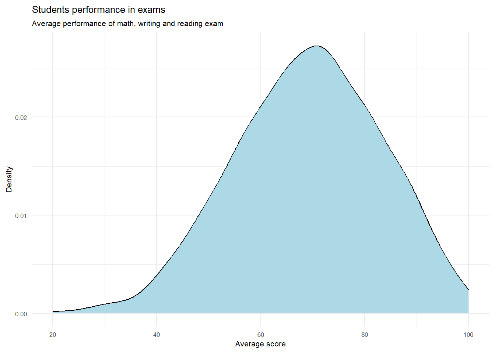
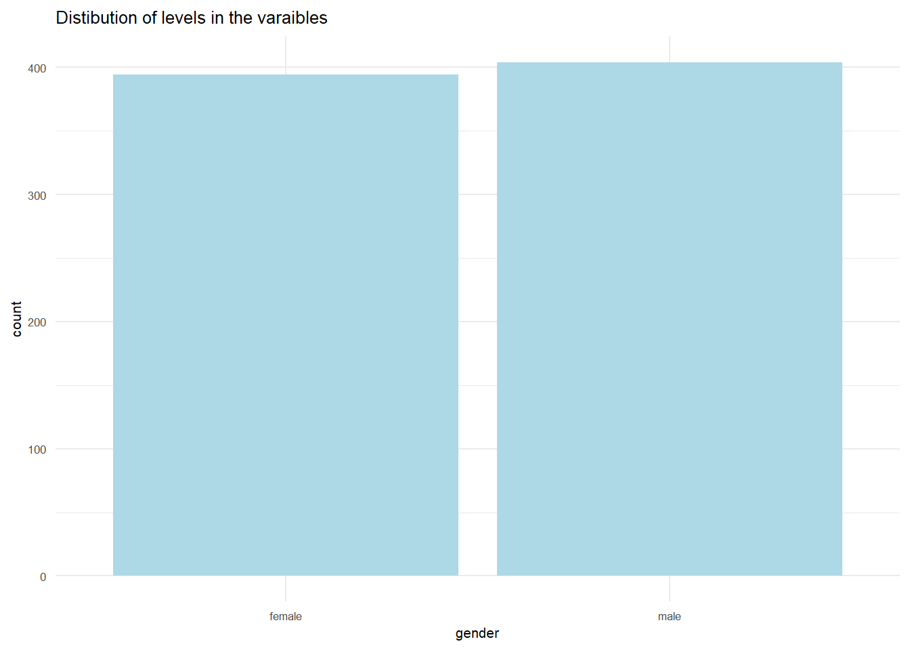
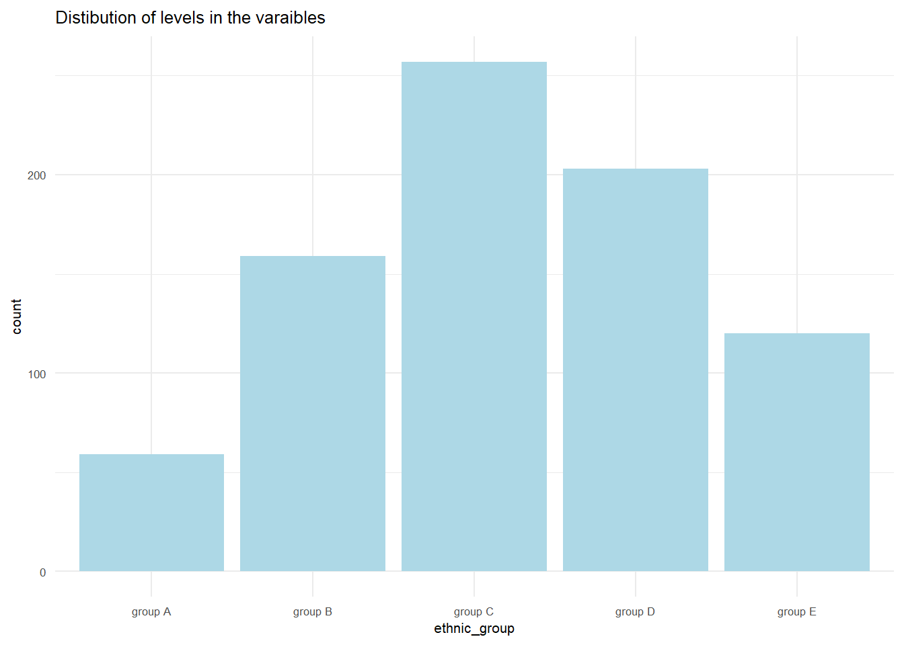
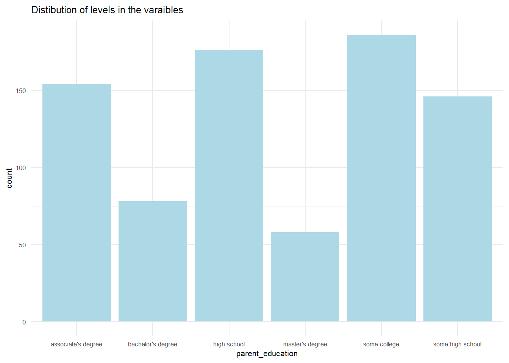
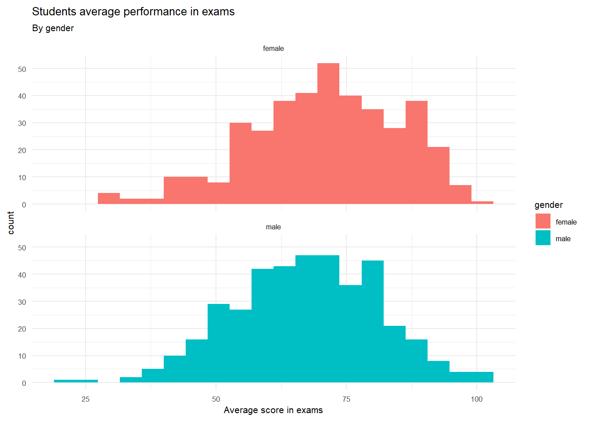
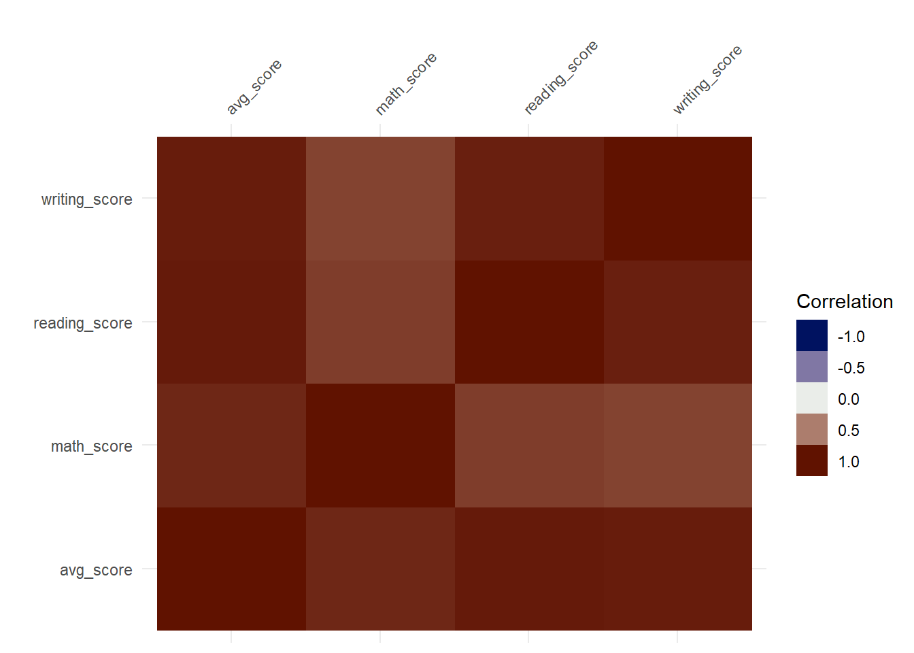
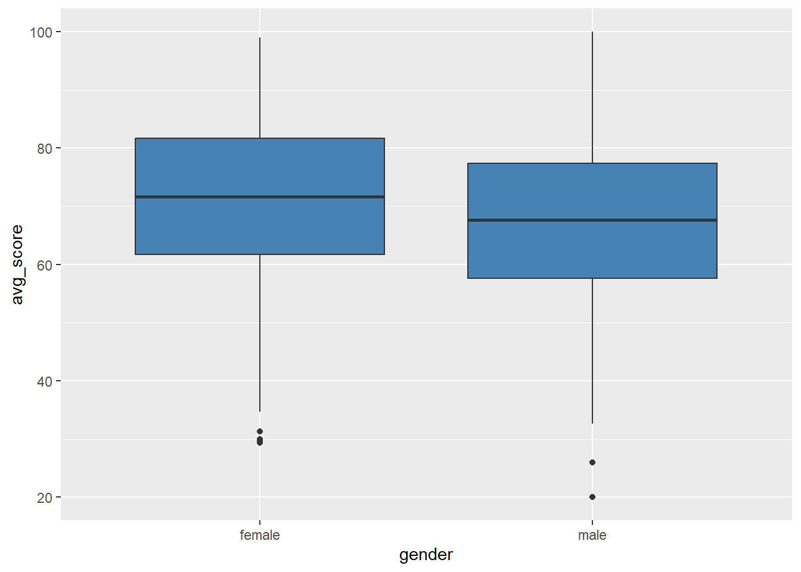
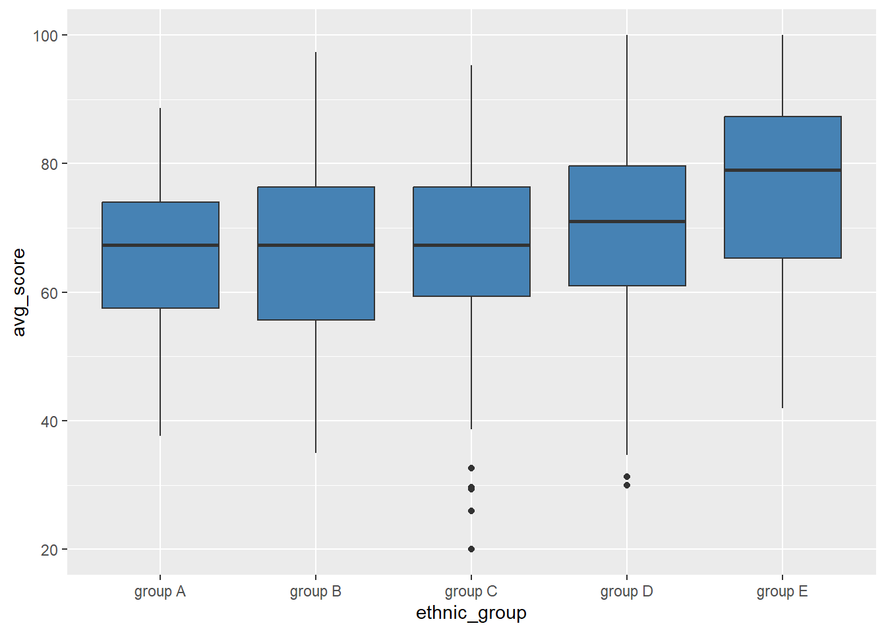

I, Daniel Steck, hereby state that I have not communicated with or gained information in any way from my classmates or anyone other than the Professor during this exam, and that all work is my own.
Introduction
This project was created within the module “Programming languages for Data Science.This project will follow the data science life-cycle, which consists of four main topics:
Plan
Data
Model
Deployment
This project focuses on using all techniques which were learned during the lecture. Moreover it has the target to learn further topics during the project and to implement them (e.g. Deployment via ventiver or shiny).
Before a project can be started the planning needs to be made first. Without the planning for the project the result often is not what was requested at the beginning. Therefore it is necessary to define what shall be made in the project and what are the targets of this project to be considered successful. Moreover, an usecase is needed as the project shall bring a benefit for the company or the results and models can be sold to others.
To sum it up this chapter is basis for the project and defines the usecase, the problem which shall be solved in this project and the targets which shall be achieved in order to determine at the end if the project was successful or not.
Note: The description in this chapter is without sources for the statements as the target was to describe a fitting “plan” chapter for this project. Some statements wont be applicable, but in the following they will be used as an assumption for the project.
Identify use case
We are a new start-up which is solving issues in companies with the latest data science technology. As we are not know in the market yet, our costumers are a bit skeptical regarding our skills. Due to that we got the job to show our skills within this project. For this our costumer provided this dataset from kaggle:
This dataset contains 1000 observations of students and their performance on their exams. Moreover, several further information for each student is given.
The target is to predict the performance of students based on demographic criteria and other factors. In addition to that several research questions shall be answered (e.g which impact has the level of education of the parents on their exam score). In order to prove our skills to the costumer the following topics shall be included within that project:
SQL queries
R queries
Data visualization and the impact on the target variable
Data Preprocessing
Train different types of machine learning models
Determine the best model and deploy it
Frame the problem
In the past it was noticed that the gap between students with very good marks and the one with quite bad ones is getting bigger and bigger, but it is not known yet why this keeps happening. This also leads to a gap when the students finish their education and they are going to work. In the future more and more people are not having the required qualification for their jobs as they are not able to finish their education due to bad marks. This needs to be stopped and changes in the system have to be made in order to improve this and to keep the country ready for the developments in the next decades.
As our costumer is responsible for the education system they are very curious of the results from this project. Based on what can be learned in the queries and visualizations as well as in the models, they plan to make changes in their education system. For example a special assistance for students who are not performing that good. It depends on the results of this project to identify possible target groups who need more support in order to improve their skills and performance in exams. Therefore, it is important to learn which groups have disadvantages in their education and why. Only with this information it is possible to support them. As more and more students with a good mark are finishing their education the qualification in the labour market will increase and this will improve the economic power of our country.
The model shall support on this task. As it will be possible to play around with the characteristics of the students and their background. The model can be the basis for the decisions for the education system.
Due to the fact that a numeric target variable shall be predicted, this project focuses on the supervised learning and a regression model shall be created.
Identify variables
The provided dataset contains eight different variables and 1000 observations. Each observation represents one student (data was anonymized) with his/her score in exams and their characteristics and their background.
Variables in the dataset:
Gender: Gender of the student. This variable has two levels in this dataset. The available data is split either in male or female.
Race/ethnicity: This columns describe the racial or ethnic background of the students (e.g. Asian, African-American, Hispanic, etc.). Note: This column was transferred in groups without information which group displays which ethnicity. This was done to get the result in this project only on the data itself and to avoid the influence of prejudges and stereotypes.
Parental level of education: What is the highest level of education attained from the students parents.There is no differentiation between the parents and only the highest level of education is listed here. The level of education from the other parent is ignored.
Lunch: What type of lunch do the students receive: Either the standard type of lunch or a free/reduced option. The free/reduced option is probably only available for students who have a family which is kind of poor.
Test preparation course: Did the students complete a test preparation course or not?
Math score: Score which was achieved by the student in a standardized mathematics test.
Reading score: Score which was achieved by the student in a standardized reading test.
Writing score: Score which was achieved by the student in a standardized writing test.
Target of this project is to get a general overview of the students performance. It is not needed to know in which course they are performing good or bad. This is important for the later steps to work with the data, but not for now. Therefore, a more generic variable shall be created which combines the total performance of the students instead of the detailed overview for math, reading and writing.
Define metrics
This project has several aspects which determine that is was successful. Note not all aspects need to be fulfilled, but there are some targets which should be fulfilled. One of this aspects is that new insights are made based on the available data set and our costumer can use this information as a basis for their decisions. It would be great if these results could be visualized in an interactive dashboard to work with the data.
Regarding the modelling process it is important that the model shall be deployed at the end of the project. Moreover some metrics are defined in order to define if the model is fulfilling the requested performance. As a regression model shall be created the following metrics are suitable in order the check if the model is performing good or not. These metrics are commonly used for evaluating and reporting the performance of regression models.
RMSE/MSE: Root Mean Squared Error / Mean Squared Error. The MSE is the mean of the squared differences between the predicted and the actual target values in the dataset. This means the result displays the squared units. This often leads to confusion (e.g. if the result is in squared dollars). The RMSE is the root of this value and is therefore often used when reporting results. Target for this project is to have a RMSE value which is smaller than 10.
R squared: Measure how much variability in dependent variable can be explained by the model. This metric is the square of Correlation Coefficient (R). The values of this metrics are between 0 and 1. The higher this metric is indicates a better fit between prediction and the actual variable. For this project the R squared value shall be at 0.4, as we only have categorical variables in the dataset.
MAE: Mean absolute error is the average of the absolute errors. Unlike the RMSE the changes in the MAE are linear and therefore intuitive. The created model at the end shall have a MAE of less than ten percent of the mean of the target value. After the data analysis was made it can be said that this would be less than 6.9.
Beside these metrics the model has to be for sure better than a model which only predicts the average of the target variable.
Within this chapter the data will be ingested and analyzed. Furthermore the data is also added into a SQL database and will be used for making queries.
SQL data analysis
Before the steps of the data science lifecycle are made, some SQL queries will be made on the data, in order to answer questions from our costumers.
First the DBI library is loaded and afterwards the data is added into the database.
Warning: Paket 'tidyverse' wurde unter R Version 4.2.3 erstellt
Warning: Paket 'ggplot2' wurde unter R Version 4.2.3 erstellt
Warning: Paket 'tibble' wurde unter R Version 4.2.3 erstellt
Warning: Paket 'dplyr' wurde unter R Version 4.2.3 erstellt
── Attaching core tidyverse packages ──────────────────────── tidyverse 2.0.0 ──
✔ dplyr 1.1.1 ✔ readr 2.1.4
✔ forcats 1.0.0 ✔ stringr 1.5.0
✔ ggplot2 3.4.2 ✔ tibble 3.2.1
✔ lubridate 1.9.2 ✔ tidyr 1.3.0
✔ purrr 1.0.1
── Conflicts ────────────────────────────────────────── tidyverse_conflicts() ──
✖ dplyr::filter() masks stats::filter()
✖ dplyr::lag() masks stats::lag()
ℹ Use the conflicted package (<http://conflicted.r-lib.org/>) to force all conflicts to become errors
# Connection to database con <-dbConnect(RSQLite::SQLite(), ":memory:")path_sql <-"https://raw.githubusercontent.com/DanielSteck/Project-Students-grades/main/exams.csv"# Write data into databasedbWriteTable(con, "exams_sql", read_csv(path_sql, show_col_types =FALSE))#show table in databasedbListTables(con)## [1] "exams_sql"
First look on the data
SELECT*FROM exams_sql;
Displaying records 1 - 10
gender
race/ethnicity
parental level of education
lunch
test preparation course
math score
reading score
writing score
female
group D
some college
standard
completed
59
70
78
male
group D
associate’s degree
standard
none
96
93
87
female
group D
some college
free/reduced
none
57
76
77
male
group B
some college
free/reduced
none
70
70
63
female
group D
associate’s degree
standard
none
83
85
86
male
group C
some high school
standard
none
68
57
54
female
group E
associate’s degree
standard
none
82
83
80
female
group B
some high school
standard
none
46
61
58
male
group C
some high school
standard
none
80
75
73
female
group C
bachelor’s degree
standard
completed
57
69
77
The dataset contains 1000 observation with eight variables. Three out of these 8 variables are the students performance on different exams.
Show the first 10 observations:
SELECT*FROM exams_sqlLIMIT10;
Displaying records 1 - 10
gender
race/ethnicity
parental level of education
lunch
test preparation course
math score
reading score
writing score
female
group D
some college
standard
completed
59
70
78
male
group D
associate’s degree
standard
none
96
93
87
female
group D
some college
free/reduced
none
57
76
77
male
group B
some college
free/reduced
none
70
70
63
female
group D
associate’s degree
standard
none
83
85
86
male
group C
some high school
standard
none
68
57
54
female
group E
associate’s degree
standard
none
82
83
80
female
group B
some high school
standard
none
46
61
58
male
group C
some high school
standard
none
80
75
73
female
group C
bachelor’s degree
standard
completed
57
69
77
It can be seen that the columns should be renamed as there are e.g. spaces included:
Show all observations which are parents_education “high_school” and have an average score in exams between 80 and 90. Result shall be ordered descending by avg_exam_score
In order to have the same data the whole time this dataset was downloaded and added to my github repo. in case that the kaggle dataset might be updated.
Lets have a look on the first rows to get an expression of the data.
exams %>%slice(1:5)## # A tibble: 5 × 8## gender `race/ethnicity` parental level of educa…¹ lunch test preparation cou…²## <chr> <chr> <chr> <chr> <chr> ## 1 female group D some college stan… completed ## 2 male group D associate's degree stan… none ## 3 female group D some college free… none ## 4 male group B some college free… none ## 5 female group D associate's degree stan… none ## # ℹ abbreviated names: ¹`parental level of education`,## # ²`test preparation course`## # ℹ 3 more variables: `math score` <dbl>, `reading score` <dbl>,## # `writing score` <dbl>
Before further steps can be made, the columns names need to be corrected, as they are including spaces and special characters. To remove those, the janitor package will be used.
library(janitor)exams <- exams %>%clean_names()
Beside the cleaning of the names, some variables shall be renamed in order to shorten the length.
The available data consist of 1000 rows. The available features are gender, ethnic_group, parent_education, lunch, test_prep, math_score, reading_score, writing_score.
Missing data
Lets have a look on the description of the data to check the formats.
There are no missing numbers in the dataset. Three variables (scores in the exam) are numeric, the other variables are characters.
Format data
Lets have a look on the character columns and check if they should be formatted as factor.
exams %>%count(gender,sort =TRUE)## # A tibble: 2 × 2## gender n## <chr> <int>## 1 male 508## 2 female 492
exams %>%count(ethnic_group,sort =TRUE)## # A tibble: 5 × 2## ethnic_group n## <chr> <int>## 1 group C 323## 2 group D 257## 3 group B 198## 4 group E 143## 5 group A 79
exams %>%count(parent_education,sort =TRUE)## # A tibble: 6 × 2## parent_education n## <chr> <int>## 1 some college 224## 2 high school 215## 3 associate's degree 204## 4 some high school 177## 5 bachelor's degree 105## 6 master's degree 75
exams %>%count(lunch,sort =TRUE)## # A tibble: 2 × 2## lunch n## <chr> <int>## 1 standard 660## 2 free/reduced 340
Target of this project is to predict the students performance on exams. Therefore an additional column shall be added. This column shall include the average exam score of the students.
As all other variables are not numeric, no further new variables can be created.
Data overview
After successfully cleaning, formatting and checking the data, lets have an overview of the data with the package skimr:
library(skimr)skim(exams)
Data summary
Name
exams
Number of rows
1000
Number of columns
9
_______________________
Column type frequency:
factor
5
numeric
4
________________________
Group variables
None
Variable type: factor
skim_variable
n_missing
complete_rate
ordered
n_unique
top_counts
gender
0
1
FALSE
2
mal: 508, fem: 492
ethnic_group
0
1
FALSE
5
gro: 323, gro: 257, gro: 198, gro: 143
parent_education
0
1
FALSE
6
som: 224, hig: 215, ass: 204, som: 177
lunch
0
1
FALSE
2
sta: 660, fre: 340
test_prep
0
1
FALSE
2
non: 656, com: 344
Variable type: numeric
skim_variable
n_missing
complete_rate
mean
sd
p0
p25
p50
p75
p100
hist
math_score
0
1
67.81
15.25
15
58.00
68.00
79.25
100
▁▂▇▇▃
reading_score
0
1
70.38
14.11
25
61.00
70.50
80.00
100
▁▃▇▇▃
writing_score
0
1
69.14
15.03
15
59.00
70.00
80.00
100
▁▂▆▇▃
avg_score
0
1
69.11
14.03
20
59.58
69.67
79.33
100
▁▂▇▇▃
The available data set consists of 1000 rows with in total 9 columns. Four columns are numeric while five are a factor.
Three factor variables have only two levels, while the other two have five and six levels. The distribution of the gender column in the two genders is quite balanced. The columns lunch and test_prep are split in 2:1 in their variables.
The distribution of the numeric variables is very similar. in general the math_score has the lowest values compared to the other three scores, but the difference is not that big. The statistics for p25, p50, p75, p100 as well as the histograms are looking very similar and the differences are only minor. The reading score has the best results in the exam.
Define features and outcome variable
In advance of the data splitting the definition of the target variable and the feature variables shall be made.
The performance in the exams shall be predicted, for this the average performance is sufficient. As the target is to predict the performance, the variables for math, reading and writing score must not be included into the feature list.
It would be also possible to make a use case for students which predicts e.g. the performance in math and also includes the students performance in the other exams. In this case only the general performance shall be predicted to see which generic attributes have a influence on students performance. Also exams are most time in a thigh schedule, which means that there wont be a lot of time between exams. Therefore it does not make sense to include also the performance in other exams to predict the performance in e.g. math. Moreover it takes some time until the results are available. So probably the students already had their exam before they receive the first results. Therefore the target in this project is the prediction of an average exam performance without including the performance in the other exams.
Nevertheless in the data exploration these other exam scores will be also included, but they wont go into the model.
Our data is now prepared for the data splitting and for building the pipelines.
Data splitting
Before the data exploration can be started, the data shall be split into a training and test set. No insights from the test data shall be used as data insights. Test data was not seen before therefore no information given by test data can be used.
To ensure that the training and test set is representative of the various categories of avg_score in the whole dataset, lets have a look on the histogram
exams %>%ggplot(aes(avg_score)) +geom_histogram (bins=6) #tested several, 6 makes most sense
The split data shall included equally data from each of the bins. In order the have the same results for each run, a fix seed is set.
Target is to have 80% of the data for training and 20% for testing.
library(rsample)set.seed(50) #for reproducability# split in train and test datadata_split <-initial_split (exams,prop =4/5,strat = avg_score,breaks =6)# Create train dataframetrain_data <-training(data_split)#create test data settest_data <-testing(data_split)
Analyze data
This chapter has the target to understand the training data and to see which variables have an influence on the outcome variable avg_score.
Data exploration set
First step is to create a copy of the training data which will be used for the exploratory data analysis.
df_explo <- train_data
R queries
First of all the data is explored with R queries and afterwards the visualization part is made.
Lets have a look on the statistics of the target variable avg_score*:
df_explo %>%summarise(min_score =min(avg_score,na.rm =TRUE) # na dependency not needed as no missing values, but it might be that data changes with an updated dataset ,mean_score =mean(avg_score,na.rm =TRUE),med_score =median(avg_score,na.rm =TRUE),std_score =sd(avg_score,na.rm =TRUE),iqr_score =IQR(avg_score,na.rm =TRUE),q1 =quantile(avg_score, probs =0.25,na.rm =TRUE),q3 =quantile(avg_score, probs =0.75,na.rm =TRUE),max_score =max(avg_score,na.rm =TRUE) )## # A tibble: 1 × 8## min_score mean_score med_score std_score iqr_score q1 q3 max_score## <dbl> <dbl> <dbl> <dbl> <dbl> <dbl> <dbl> <dbl>## 1 20 69.1 69.7 14.1 20 59.3 79.3 100
The worst exam result is 20 while 100 is the best one. Moreover the mean and median values are almost similar and there is only a slight difference. This means that there are no big outliers included here (which is also easy to explain as 100 is the best possible performance in an exam). The IQR score of 20 tells us, that the difference between the 75th and 25th percentile is only having a difference of 20. So 50% of the data is within a difference of 20.
25% of the students have an exam score of less than 59,3 and 25% of the students are above 79,3. 50% of the students are between 59,3 and 79,3 (the IQR value can be seen here).
Moreover it is interesting how the median, mean and iqr, q1, q3 values are distributed within the categorical variables.
Lets have a look on the gender variable and sort the results descending.
The performance of female students is better than the performance of male students. The mean score for females is 3.3 higher and the median score is 4.0 higher.
Lets have a look on the ethic_group variable and sort the results descending.
df_explo %>%group_by(ethnic_group) %>%summarise(mean_score =mean(avg_score,na.rm =TRUE),med_score =median(avg_score,na.rm =TRUE),iqr_score =IQR(avg_score,na.rm =TRUE),q1 =quantile(avg_score, probs =0.25,na.rm =TRUE),q3 =quantile(avg_score, probs =0.75,na.rm =TRUE), ) %>%arrange(desc(med_score))## # A tibble: 5 × 6## ethnic_group mean_score med_score iqr_score q1 q3## <fct> <dbl> <dbl> <dbl> <dbl> <dbl>## 1 group E 76.2 79 22 65.3 87.3## 2 group D 70.3 71 18.7 61 79.7## 3 group A 66.2 67.3 16.5 57.5 74 ## 4 group B 66.3 67.3 20.7 55.7 76.3## 5 group C 67.2 67.3 17 59.3 76.3
The group E has the best performance in the exams. There is a huge gap compared to group D. Moreover there is almost no difference in mean and median between the other three groups. It might make sense to combine these groups into one group. But lets analyse this first in a visualization, because the IQR score is spreading a lot between these groups. For example the difference in the q1 is much higher than in the mean and median.
Lets have a look on the variable of parents education and sort the results descending.
It can be seen that a higher parent education is not directly leading to a better exam score. The best students are within the associate's degree which is a lower education than the master's degree and bachelor's degree.
Based on the given levels, this would be the ascending order of parent_education (based on these links):
There is a huge difference between the students performance which have a standard meal and the ones which have a free/reduced meal. Probably the students who are getting a free/reduced meal are from a porerer family which might have less time to spend with their kids or maybe the kids education is not the highest priority. As the family might have financial issues it could be also possible that the students need to work in order to have enough money for the family. Therefore it might be possible that their study time is needed for working and this might lead to worse results.
Lets have a look on the test preparation variable and sort the results descending.
Students who made a test preparation course have much better results than students who didn’t. But the difference is much smaller than in the lunch variable.
Visualizations
In this chapter plots are created in order to learn from the data and find correlations between the variables.
In order to select the correct visualizations the visualizations are based on From Data to Viz
First of all lets start with the plot of the target variable. How is it distributed in the value range?
library (ggplot2)ggplot(data = df_explo, mapping =aes(x = avg_score)) +geom_density(fill="lightblue") +labs(title ="Students performance in exams", subtitle="Average performance of math, writing and reading exam",x ="Average score",y ="Density") +theme_minimal()+theme (text =element_text(size=8),legend.key.size =unit(5, "mm"))

The results are quite similar compared to what was learned in the R queries. Highest density of the average_score is at the median score. There are only a small amount of scores which are below 40.
Now lets have a look on our features. For this usecase we only got categorical features in our data set. Therefore lets have a look on their levels and the uniqueness.
for (i in features){ p <-ggplot(df_explo, aes_string(x=i)) +geom_bar(fill="lightblue")+labs(title ="Distibution of levels in the varaibles", y="count") +theme_minimal()+theme (text =element_text(size=8),legend.key.size =unit(5, "mm"))plot(p) }



It can be seen that there the variable gender is equally distributed on male and female.
The ethnic group has the most occurrences within group C, while group A and group E have a smaller occurency. Especially group A has only about 50 occurrences.
Regarding the parents education- this feature has six levels which are not equally distributed. Four levels have a almost similar occurrence, while the level Bachelors and Masters degree have the lowest occurrences.
The lunch type has two levels which are not equally distributed, about 66% occurrences are the standard lunch type, while 33% are the free/reduced type of lunch. This is actually quite a high number of reduced/free lunch meals.
The amount of students who performed a test preparation course is about 35% while 65% of students did not make any test preparation.
Lets have a look on the impact of these features and their levels on the target variable average score
For this project the visualizations of categorical and the target variable will be made with box plots, density plots, violin plots and histograms in order to show the different possibilities in R. Therefore the variables will be displayed in different graphical visualizations. In general box plots would be a very good way to visualize these results, but for demonstration purposes different visualizations are made.
Impact Gender on Avg_score
ggplot(data = df_explo, mapping =aes(x = avg_score, fill=gender)) +geom_histogram(bins=20) +labs(title ="Students average performance in exams", subtitle="By gender",x ="Average score in exams",y ="count") +theme_minimal()+theme (text =element_text(size=8),legend.key.size =unit(5, "mm"))
Actually in this plot it is not that easy to see the differences between those two genders. So therefore lets try it with a facet wrap.
ggplot(data = df_explo, mapping =aes(x = avg_score, fill=gender)) +geom_histogram(bins=20) +facet_wrap(~gender, ncol=1)+labs(title ="Students average performance in exams", subtitle="By gender",x ="Average score in exams",y ="count") +theme_minimal()+theme (text =element_text(size=8),legend.key.size =unit(5, "mm"))

Now it can be seen that female are performing better than the males. There are a lot of test results above 80, while the males have a peak at above 75. But it is interesting that the are much more males who achieve 100 points in the exam compared to the women.
Impact ethnic_group on Avg_score
The different ethnic groups and their impact on the avg_score shall be displayed within a boxplot.
Actually the results from the R queries can be confirmed. Best results are in group E and the groups A, B and C have almost the same values. Even though there are some outliers in group C. The mean for these three groups is almost the same, but it can be seen that group B has different whiskers, here the IQR range is spread the most.
Impact parent_education on Avg_score
This variable and their influence on the average score shall be visualized in a violin plot.
Quite similar results as in the R queries. It can be seen that the associates degree as parent education leads to the best median score. But it can be seen that there are also a lot of students in this group which have results of less than 40. Only in two other groups the results are worse. In five out of six parent degrees the most students are concentrated nearby the median score. But the high_school degree has a peak of at the average score of 63 and as well another, smaller peak at the peak of 80. Moreover on this group there are the students with the worst results. Furthermore the group of some college and bachelors degree have a very similar violin plot and there are only minor differences between those two groups.
Impact lunch on Avg_score
The impact of the lunch type shall be displayed within a density plot. Moreover, this plot shall be extended by the Impact of test preparation course on Avg_score.
ggplot(df_explo, mapping =aes (x=avg_score, fill=lunch)) +geom_density(alpha=0.7) +scale_fill_manual("Lunch", values =c("#339999", "#FFFF66"))+facet_wrap(~test_prep, ncol=1)+labs(title ="Students average performance in exams", subtitle="By type of lunch and if a test preperation course was made",x ="Average score in exams",y ="density") +theme_minimal()+theme (text =element_text(size=8),legend.key.size =unit(5, "mm"))
It can be clearly seen that the students who completed the test preparation course have a much better performance than those who did not. Also the students who have a standard meal are performing better than those who are having only a free or reduced meal. If both features are combined it can be clearly seen that students who made the test preparation course AND have a standard meal are performing much better than those students who did not make a test preparation course and who only get a free/reduced meal. These two features have a big impact on the target variable.
Visualizations (incl. perform results)
This chapter is used to show the possibilities of data visualizations if we could use numeric variables. Therefore correlation plots will be made with those variables - even though they must not be included into the later models.
In order to select the correct visualizations the visualizations are based on From Data to Viz
Lets start with the students performance in math compared to their performance in the average exam score.
ggplot(df_explo, aes(math_score, avg_score))+geom_point(color="lightblue")+labs(title ="Students average performance in exams", subtitle="Average performance and math performance",x ="Average score in maths",y ="Average score in exams") +theme_minimal()+theme (text =element_text(size=8),legend.key.size =unit(5, "mm"))
It can be clearly seen that there is a linear relationship between the math performance and the average performance (which makes sense as the average performance is based on the math performance, but this is made for demonstration purposes). The correlation between those variables is very strong.
Lets add two further variables to this plot. Lets add the type of lunch and the test preparation as well. Moreover it shall be wrapped by the ethnic group.
ggplot(df_explo, aes(math_score, avg_score, color=lunch, shape=test_prep))+geom_point()+facet_wrap(~ethnic_group)+labs(title ="Students average performance in exams", subtitle="By lunch type, ethnic_group and if test preparation was made",x ="Average score in maths",y ="Average score in exams") +theme_minimal()+theme (text =element_text(size=8),legend.key.size =unit(5, "mm"))
It can be seen that the performance in group E and D is the best, as well as that students with standard lunch and test preparation course are performing better.
Now lets have a look on the correlations between our three exam scores and the average exam score.
df_explo %>%select(where(is.numeric)) %>%# only select numerical datavis_cor(cor_method ="spearman", na_action ="pairwise.complete.obs")

It can be seen that all variables have a huge correlation with each other. Students which are performing good in one exam are likely to perform good in all exams. But it can be also seen that the correlation between writing and reading is much higher than the correlation to math and the other exams.
Math score has the lowest impact on the average score, while writing and reading scores have the highest. As learned in the correlation matrix before: Writing and Reading are correlating with each other. Therefore this result was expectable.
Now lets analyze the numeric variables in more detail. Moreover the categorical variable “lunch” shall be added as well.
As the numeric variables are already so good in predicting the avg_score, the impact of the lunch type is no longer seen. In the analysis before it was clearly seen that this variable has a big impact on the avg_score.
Anomaly detection
Within this chapter the data is checked for outliers and missing data. This is done in the original dataframe. This is done so that it can be learned which steps need to be made in the pipeline definitions. No changes are made with the data, it is only checked how to deal with detected issues.
Missing values
This was already performed in the Data Ingestion chapter, nevertheless it is performed again in this chapter.
There are no missing data/rows in the available data.
Outlier and novelty detection
Lets check our data for outliers - as it was already made during the Data analysis. For the categorical data there are no outliers included, as they are only spread through a limited set of levels. Moreover there is no level included which is underrepresented. Therefore the check for outliers is only made in the target variable.
Lets create a plot of the target variable in box plots with all categorical data.
for (i in features){ p <-ggplot(df_explo, aes_string(x=i, y=y_label)) +geom_boxplot(fill="steelblue")plot(p) }


It can be seen that there are certain outliers included in the available data. These outliers are certain students who performed very bad in the exams. The training data contains outliers, these are defined as observations which are far from the others. Outlier detection estimators thus try to fit the regions where the training data is the most concentrated, ignoring the deviant observations.
These outliers make it hard for the later model to predict the result correctly. The learning from this chapter shall be included in the later model creation.
Feature engineering
All topics which were learned/discovered within the earlier steps shall be used now for the data preprocessing and feature engineering. This will be made with data pipelines. Those are generated with the tidymodels package recipes and workflows. The feature selection part wont be included here, as the features are selected within the modeling part (Forward selection in order to determine the best features). So the recipe will include all available features for a base model. In the model chapter the Feature Selection will be made with the available packages and tools in R.
Feature transformation
Target of feature transformations - for this project and maybe new data in the future is to get red of:
missing values
outliers
categorical variables –> one hot encoding
Other datasets would need further steps which do not apply in this project due to the data structure. Those other steps could be:
get data on the same scale
standardize the data
handle skewed distribution of data
take care if the data might be censored at certain limits (e.g. at the low and or high of the data)
Missing values: As we do not have any missing data in the data set, this step could be skipped. But in case that there might be newer data in the future which could have missing data, this should be added to the pipeline. There are three ways to handle missing data: Delete the observation with missing data, remove the whole attribute or impute it with some other values, e.g. the mean, median, etc. For this project missing data shall be dropped within the pipeline.
Outliers: Some outliers are included in the data set. For handling those the target is to test the experimental 3-rd party package from tidy_outlier
One-Hot_encoding: Our available categorical data needs to be converted to numbers as algorithms prefer to work with numbers. For this the tidy models step_dummy function will be used.
Feature extraction
Some features might include relevant information which could be redundant. That would be there wont be any benefit in adding both features in the model, if the target variable can be determined with one of those.
Therefore it makes sense to remove features which have large correlations with each other. But this is more likely at numeric features. In the feature extraction this can be made by using the ratio of two predictors or with more complex methods like principal component analysis.
This also makes sense to use in case that the number of features is high.
For this usecase this is only partly applicable, as there are only categorical features available.
Final data pipeline
In the following pipeline all steps for the feature engineering are included:
library(tidy.outliers)library(recipes)exam_rec <-recipe(avg_score ~+gender + ethnic_group + parent_education + lunch + test_prep, data = train_data) %>%#definition of features and target variablestep_naomit(everything(), skip =TRUE) %>%#remove missing observationsstep_dummy(all_nominal()) %>%#converts factors into numeric binary (0 and 1) variablesstep_outliers_maha(all_numeric(), -all_outcomes()) %>%step_outliers_lookout(all_numeric(),-contains(r"(.outliers)"),-all_outcomes()) %>%#identify outliersstep_outliers_remove(contains(r"(.outliers)")) %>%#remove outliersstep_corr(all_predictors(), threshold =0.7, method ="spearman") # remove correlated features (maybe not necessary as only character features as input)
Lets have a look on the current set of variables and roles:
The recipe was successful! The character columns were successfully changed to dummy variables, so that the models can work with them. Moreover three observations were removed as they were identified as outliers.
Moreover a validation set shall be created. This shall be used to validate the later models. After the best model is used (based on the validation set) the model can be tested with the test data. The amount of breaks is the value which was learned in the Data Visualization chapter.
After the data and features have been preprocessed in a format which is ready for the modeling algorithms, they can be used in the model selection process.
Target for the Model and Deployment phase is to perform all steps in the usual way with tidymodels and afterwards one time by using MLFfow.
Select algorithm
The target is to predict the avg_score of students in exams. This outcome variable is numeric. Therefore a Regression model needs to be selected for this usecase. As labeled data is available a supervised learning is performed. The following page is used to select three different model types and their engines: Tidymodels: Search parsnip models
Three different kind of models shall be selected in order to see how the performance of them differentiates and which is handling the available data the best.
The following three models were selected:
Boosted Tree (XGBoost)
Decision trees would be good for modelling non linear relationships, as we only have categorical variables this might be useful.
Risk of overfitting on the training data –> Implement cross-validation in order to prevent this.
Boosted tree is an ensembeld learner which starts with simple base models and tries to “boost” their aggregate complexity –> In practice often with a high performance for the results.
Linear Regression (Keras - changed to glmnet as I had issues to get keras and tensorflow running. For this a python installation and connection is needed)
Faster to train and are simpler. Linear algorithms might get issues if the data has many intersecting correlations, but this is not the case in this dataset.
Fits normally a “straight line” on the data –> perfectly for our target variable.
Disadvantage: Prone to overfit with many input features and are not that good in expressing non-linear relationships –> Both does not apply for this dataset, but only categorical input data is available.
Single layer neural network (Keras - changed to nnet, see above)
Can recognize patterns by itself.
Good for complex datasets –> our dataset is quite simple
Sadly it is not really possible to find out why the model has decided for the output. Also hyperparameter tuning is not that easy.
set.seed(50)xgb_res_1 <- xgb_workflow_1 %>%fit_resamples(resamples = cv_folds,control =control_resamples(save_pred =TRUE) )xgb_res_1 %>%collect_metrics(summarize =TRUE)## # A tibble: 2 × 6## .metric .estimator mean n std_err .config ## <chr> <chr> <dbl> <int> <dbl> <chr> ## 1 rmse standard 13.0 5 0.225 Preprocessor1_Model1## 2 rsq standard 0.176 5 0.0149 Preprocessor1_Model1
How are these metrics spreading through the cross_validation:
xgb_res_1 %>%collect_metrics(summarize =FALSE)## # A tibble: 10 × 5## id .metric .estimator .estimate .config ## <chr> <chr> <chr> <dbl> <chr> ## 1 Fold1 rmse standard 12.3 Preprocessor1_Model1## 2 Fold1 rsq standard 0.220 Preprocessor1_Model1## 3 Fold2 rmse standard 12.8 Preprocessor1_Model1## 4 Fold2 rsq standard 0.178 Preprocessor1_Model1## 5 Fold3 rmse standard 13.3 Preprocessor1_Model1## 6 Fold3 rsq standard 0.183 Preprocessor1_Model1## 7 Fold4 rmse standard 13.6 Preprocessor1_Model1## 8 Fold4 rsq standard 0.127 Preprocessor1_Model1## 9 Fold5 rmse standard 13.0 Preprocessor1_Model1## 10 Fold5 rsq standard 0.170 Preprocessor1_Model1
There are some smaller differences between these folds, but overall those differences are not to big.
Lets visualize these metrics into a plot. For this the predictions are plotted on the y-axis and the actual values on the x-axis. If a perfect model would have been created, all points would be on the diagonal line
assess_xgb_res_1 <-collect_predictions(xgb_res_1)assess_xgb_res_1 %>%ggplot(aes(x = avg_score, y = .pred)) +geom_point(alpha = .15) +geom_abline(col ="blue") +coord_obs_pred() +ylab("Predicted") +xlab("Actual Average Exam Score")
If we consider that this is the first created model and that there are only categorical features in the dataset, this result (RMSE) not that bad, but the R squared is low. Lets see in the next chapter how the Boosted Tree Performance can be increased. Further steps are to adapt the hyperparameters and the features which are added into the model.
Linear Regression
set.seed(50)lin_reg_res_1 <- lin_reg_workflow_1 %>%fit_resamples(resamples = cv_folds,control =control_resamples(save_pred =TRUE) )lin_reg_res_1 %>%collect_metrics(summarize =TRUE)## # A tibble: 2 × 6## .metric .estimator mean n std_err .config ## <chr> <chr> <dbl> <int> <dbl> <chr> ## 1 rmse standard 12.1 5 0.290 Preprocessor1_Model1## 2 rsq standard 0.261 5 0.0238 Preprocessor1_Model1
How are these metrics spreading through the cross_validation:
lin_reg_res_1 %>%collect_metrics(summarize =FALSE)## # A tibble: 10 × 5## id .metric .estimator .estimate .config ## <chr> <chr> <chr> <dbl> <chr> ## 1 Fold1 rmse standard 11.6 Preprocessor1_Model1## 2 Fold1 rsq standard 0.288 Preprocessor1_Model1## 3 Fold2 rmse standard 11.7 Preprocessor1_Model1## 4 Fold2 rsq standard 0.288 Preprocessor1_Model1## 5 Fold3 rmse standard 12.8 Preprocessor1_Model1## 6 Fold3 rsq standard 0.227 Preprocessor1_Model1## 7 Fold4 rmse standard 12.8 Preprocessor1_Model1## 8 Fold4 rsq standard 0.185 Preprocessor1_Model1## 9 Fold5 rmse standard 11.6 Preprocessor1_Model1## 10 Fold5 rsq standard 0.315 Preprocessor1_Model1
There are some smaller differences between these folds, but overall those differences are not to big. Overall these metrics changed compared to the simple XGBoost model. The First model had a higher RMSE and a lower RSQ value.
Lets visualize these metrics into a plot. For this the predictions are plotted on the y-axis and the actual values on the x-axis. If a perfect model would have been created, all points would be on the diagonal line
assess_lin_reg_res_1 <-collect_predictions(lin_reg_res_1)assess_lin_reg_res_1 %>%ggplot(aes(x = avg_score, y = .pred)) +geom_point(alpha = .15) +geom_abline(col ="blue") +coord_obs_pred() +ylab("Predicted") +xlab("Actual Average Exam Score")
Single Layer Perceptron
set.seed(50)neural_res_1 <- neural_workflow_1 %>%fit_resamples(resamples = cv_folds,control =control_resamples(save_pred =TRUE) )neural_res_1 %>%collect_metrics(summarize =TRUE)## # A tibble: 2 × 6## .metric .estimator mean n std_err .config ## <chr> <chr> <dbl> <int> <dbl> <chr> ## 1 rmse standard 13.3 5 0.339 Preprocessor1_Model1## 2 rsq standard 0.177 3 0.0271 Preprocessor1_Model1
How are these metrics spreading through the cross_validation:
neural_res_1 %>%collect_metrics(summarize =FALSE)## # A tibble: 10 × 5## id .metric .estimator .estimate .config ## <chr> <chr> <chr> <dbl> <chr> ## 1 Fold1 rmse standard 13.7 Preprocessor1_Model1## 2 Fold1 rsq standard NA Preprocessor1_Model1## 3 Fold2 rmse standard 12.3 Preprocessor1_Model1## 4 Fold2 rsq standard 0.223 Preprocessor1_Model1## 5 Fold3 rmse standard 13.6 Preprocessor1_Model1## 6 Fold3 rsq standard 0.129 Preprocessor1_Model1## 7 Fold4 rmse standard 14.2 Preprocessor1_Model1## 8 Fold4 rsq standard NA Preprocessor1_Model1## 9 Fold5 rmse standard 12.9 Preprocessor1_Model1## 10 Fold5 rsq standard 0.177 Preprocessor1_Model1
There are some smaller differences between these folds, but overall those differences are not to big.
This model has the highest RSME score. The RSQ score is similar to the result of the XGBoost.
Lets visualize these metrics into a plot. For this the predictions are plotted on the y-axis and the actual values on the x-axis. If a perfect model would have been created, all points would be on the diagonal line
assess_neural_res_1 <-collect_predictions(neural_res_1)assess_xgb_res_1 %>%ggplot(aes(x = avg_score, y = .pred)) +geom_point(alpha = .15) +geom_abline(col ="blue") +coord_obs_pred() +ylab("Predicted") +xlab("Actual Average Exam Score")
Feature Selection
After the initial models were created and their results were visualized, lets have a look on the feature importance’s. Currently all available features were used for the model creation. Therefore lets analyze the Feature Importance and maybe it might be better to remove some features.
It can be seen that the other exam scores are having the biggest influence on the average score - which totally makes sense as these variables are the basis for this variable. This is exactly why they need to be removed from the modelling, even though they have a huge feature importance.
Beside these variables the most important features are the lunch and test_preparationvariables. Also an important features seems to be the ethnic_group but only for one level (Group E). The other levels have only a very small influence on the result. Also the gender variable seems to be a bit important. The lowest feature importance is brought in by the parent_education as most of the levels have only a very small Importance. This result is matching the learning from the data visualization. In that chapter it was learned the most of the other levels have only a small impact on the average exam score.
Forward Selection
Lets make a simple model in which a Forward selection if performed. The result of this shall determine the variables which shall be used in all models.
# Set seed for reproducibilityset.seed(50)# Set up repeated k-fold cross-validationtrain.control <-trainControl(method ="cv", number =50)# Train the modelstep.model <-train(avg_score ~ gender + ethnic_group + parent_education + lunch + test_prep, data = train_data,method ="leapForward", tuneGrid =data.frame(nvmax =1:5), # only add 5 variables - we only have 5 in the datatrControl = train.control )step.model$results## nvmax RMSE Rsquared MAE RMSESD RsquaredSD MAESD## 1 1 13.24565 0.1390763 10.85628 1.724771 0.1253628 1.404933## 2 2 12.70180 0.2215130 10.48467 1.867817 0.1835467 1.635797## 3 3 12.34800 0.2499183 10.17653 1.836641 0.1850143 1.617479## 4 4 12.19919 0.2660067 10.09570 1.794291 0.1793756 1.605500## 5 5 12.19822 0.2684751 10.08568 1.890109 0.1707500 1.664600
It can be seen that we get the best scores for RMSE and R squared are achieved if all variables are added into the model. But the difference between 3, 4 and 5 variables is very small. Moreover there is no consideration of the adjusted R squared. R squared is increasing most times if additional variables are added into the model while the adjusted R squared is adding a penalty for this.
Nevertheless we will continue with the model which has the highest R squared and RMSE score. It needs to be added that both of these values are not that good.
Lets display the best tuning values (nvmax) selected by the train() function.
step.model$bestTune## nvmax## 5 5
Result from Forward selection is to use all 5 variables for modelling.
Lets check in which order these variables are selected. This can be seen by the * in the corresponding selection step.
Below is the result summed up. The rank of the most important features is:
Lunch
Test preparation
ethnic_group
parent_education
gender
For better results of the model it would make sense to have a deeper analysis of the adjusted R squared score for the added variables. Moreover it would probably make sense to reduce the amount of levels in the variables. For example some ethnic groups have almost no difference between their performance on the average exam score.
Model Tuning
This chapter will cover the possibilities of model tuning. For this the three created basis models will be tuned. In the first step the adaption of parameters is made manually. In the second step the tune package is used. For the model performance only the numeric results will be compared. No further analysis of the visualization of model results will be made. At the end the model with the best performance will be used to make a final fit on the training data.
As a comparison a model which only contains the mean will be created. This will be used as a simple comparison if the created model performs better than a simple guess of the mean for all exam scores.
Boosted Tree
For the Boosted Tree the following hyperparameters shall be adapted:
Trees: Amount of trees in the ensemble - default 15
Tree_depth: Maximal depth of the tree (e.g number of splits) - default 6
min_n; minimum amount of data points for a further split - default 1
Learn_rate: Learn-rate at which the algorithm adapts from iteration to iteration - default 0.3
Loss_reduction: Minimum loss reduction - default 0.0
First of all a new model specification is created. In this the hyperparameters are specified which shall be tuned.
Note: Due to to many different model variations, I have decided to reduce the grid to a maximum of three hyper parameters. Instead of additional hyper parameters, it makes more sense to test more levels in between.
xgb_spec_3## Boosted Tree Model Specification (regression)## ## Main Arguments:## trees = tune()## min_n = tune()## tree_depth = tune()## ## Computational engine: xgboost
The tune() is like a placeholder. After the tuning process single numeric values are selected for each of the hyperparameter.
In the next steps several models are trained using resampled data. Afterwards it is checked which model performs best. For this a grid of values is created:
The hyper parameter optimization with the tune package increased the RMSE a lot compared to the initial model. It has also increased to the manual selected hyper parameters.
But it has to be said that I am skeptical regarding the selected best hyper parameters… Tree_depth of one and a min_n of two do not seem to be robust for new data… Probably the model is overfitting.
Linear regression
For the Linear Regression model the following hyper parameters shall be adapted:
Penalty: Amount of regularization - has no default and requires a single numeric value
Mixture: Proportion of lasso penalty - default 1.0
lin_spec_3## Linear Regression Model Specification (regression)## ## Main Arguments:## penalty = tune()## mixture = tune()## ## Computational engine: glmnet
The tune() is like a placeholder. After the tuning process single numeric values are selected for each of the hyper parameter.
In the next steps several models are trained using resampeled data. Afterwards it is checked which model performs best. For this a grid of values is created:
The hyper parameter optimization with the tune package increased the RMSE only by a minimum compared to the initial model. For the linear regression almost no improvement was possible.
The model performance is similar to the xgboost model which was tuned with the tune package.
Single Layer Neural Network
For the Single Layer Neural Network the following hyperparameters shall be adapted:
hidden_units: #Hidden units - default 0
Penalty: Amount of regularization - default 0.0
epochs: Amount of epochs for training - default 100L
neural_spec_3## Single Layer Neural Network Model Specification (regression)## ## Main Arguments:## hidden_units = tune()## penalty = tune()## epochs = tune()## ## Computational engine: nnet
The tune() is like a placeholder. After the tuning process single numeric values are selected for each of the hyper parameter.
In the next steps several models are trained using resampelled data. Afterwards it is checked which model performs best. For this a grid of values is created:
The hyper parameter optimization with the tune package increased the RMSE a lot compared to the initial model. It has also increased to the manual selected hyper parameters.
The best models (based on lowest RMSE) are:
RMSE: 12.10604 - Linear Regression
RMSE: 12.10782 - XGBoost
RMSE: 12.13196 - Neural Network
All models have very similar performance metrics and the differences are minor. But the RMSE score is still quite high and the R squared quite low... Probably the available (only categorical) variables are not that good for predicting the performance of the students in the exams. This was also seen in the previous chapters with the R squared score which was only slightly above 0.25.
In the next step the best model will be fitted a last time on the training data before the deployment phase can be started.
For the final model the Linear regression models is chosen as it has one the one hand the best results and on the other hand the model is quite simple and is well suited for predicting linear relationships.
Deployment
Within this chapter three different topics shall be made. On the one hand the model deployment via ventiver shall be made. For this the model shall be validated, deployed, etc…
Moreover, a dashbaord shall be created which displays the dataset and in which different visualizations can be made. It would be also possible to add there the model and make predictions within that Dashboard, but I do prefer to also have a look in the other tools instead of going very deep only in one tool. With that I am familiar with more tools and can decide in future which fits best for certain problems. The code for the dashboard is in a separate folder.
As third target of this chapter MLFlow shall be used for modeling, model monitoring etc.
Validate model
In this chapter the best model from the modeling will be fitted on all training data instead of only the split cross-validation data set. The final fitted model can be deployed and validated on the test data.
Add the model with the best results to the defined workflow:
last_fit_model %>%collect_metrics()## # A tibble: 2 × 4## .metric .estimator .estimate .config ## <chr> <chr> <dbl> <chr> ## 1 rmse standard 12.8 Preprocessor1_Model1## 2 rsq standard 0.163 Preprocessor1_Model1
The performance of the model on test data is worse than it was on the training data. The RMSE metric increased from 12.1 to 12.77. Probably the model was overfitted a bit on the training data. But the RMSE score is still better than for certain created models in the Modelling phase (on training data).
The R squared value is really low compared to the defined metrics at the project begin. It can be said that all created models are not fulfilling the defined metrics for a successful project. Nevertheless the model will be used for the deployment.
Compare the model with a simple model which only predicts the mean:
mean_model_data <- train_data %>%mutate (mean =mean(avg_score))mean_model_data## # A tibble: 798 × 10## gender ethnic_group parent_education lunch test_prep math_score reading_score## <fct> <fct> <fct> <fct> <fct> <dbl> <dbl>## 1 female group B some high school stan… none 46 61## 2 male group B master's degree stan… none 53 50## 3 male group C master's degree free… none 55 54## 4 male group E master's degree free… none 56 46## 5 female group C some college free… none 35 47## 6 male group D high school free… none 58 52## 7 female group D master's degree free… none 32 35## 8 female group A some high school stan… none 57 53## 9 male group C associate's deg… free… completed 46 46## 10 female group B high school stan… none 52 56## # ℹ 788 more rows## # ℹ 3 more variables: writing_score <dbl>, avg_score <dbl>, mean <dbl>
Now lets see how this prediction is performing on the available data.
The RMSE score of a model which is only predicting the mean is worse than the created model. Even thought the difference is not that big…
As the created model is better than a simple model which only predicts the mean the project can continue and the deployment can be made.
Atleast the model is better than this simple one for comparison. If the set target was not achieved, this still shows that the created model is atleast better then only a mean prediction.
First of all a last fit of the created final model will be made. This is done as with the previous last fit the model is not compatible for deploying with vetiver. With this last fit on the training data the model fits to the requirements from vetiver
In the next step the model name and pin name gets specified.
Moreover the model is defined. For this the vetiver package is used.
library(vetiver)library(glue)library(rsconnect)library(pins)# define names for model and pinmodel_name <-"Prediction_of_exam_score_model_r"pin_name <-glue("daniel.steck/{model_name}")v <-vetiver_model( #create vetiver model last_fit_model_depl, #model which performed the last fit model_name, #model name from aboveversioned =TRUE#versioning shall be made)v## ## ── Prediction_of_exam_score_model_r ─ <bundled_workflow> model for deployment ## A glmnet regression modeling workflow using 5 features
After the model was defined the model is written to the pin in order to deploy it.
Sadly I could not find the information for Rsconnect in order to deploy it via an API in Rsconnect. Therefore the model will be written to a local and temporary board.
model_board <-board_temp(versioned =TRUE) #authentifact information for rsconnect board not found, therefore no deployment on rsconnect# Write the model to the board.model_board %>%vetiver_pin_write(v)
Check all versions on the board:
model_board %>%pin_versions(model_name)## # A tibble: 1 × 3## version created hash ## <chr> <dttm> <chr>## 1 20230429T122647Z-87efe 2023-04-29 14:26:47 87efe
Serve model
Usage of plumber in order to deploy the model with vetiver.
If this code chunk is running it is possible to make predictions with the model in a separate window.
pr() %>%
vetiver_api(v) %>%
pr_run(port = 8000)
library(plumber)#code is commeted out in order for the rendering of the quarto file. This code shall be put into the console in order to make predictions on the model.#pr() %>%# vetiver_api(v) %>%# pr_run(port = 8000)
It is also possible to deploy the vetiver API to other infrastructures than Posit Connect (e.g. AWS or Azure). For this a Docker container helps a lot. This docker container will be created in the next code block. The code is commented out as it shall not be made for each run of the document. Moreover there wont be further changes in the model. If new files shall be created the code can be added to the console or the “#” can be removed.
#vetiver_prepare_docker(model_board, model_name)
Three files have been created:
Dockerfile
Plumber file serving the REST API
ventiver_renv_lock file to capture the model dependencies.
Predict from the model endpoint:
In case that the model is running in another process (e.g. remotely) it would be also possible to get predictions from this model in R. Below the endpoint definition is made as well as the request for a new student exam performance.
Sadly this prediction is not working as I always get the error message, that the connection is refused…
Probably the issue is that it was only deployed locally maybe the prediction from the endpoint is only possible as long as the model is deployed locally. In order to execute this chunk here, the previous needs to be stopped.
Monitor model
After the model was successfully deployed it is very important to monitor its statistical performance. The issue is that the decrease of model performance is not noticed as the model can continue returning predictions without errors. These quiet performance problems might occur when the statistical distribution of an input feature changes or when there is change in the relationship between input features and the outcome.
The silent failure can happen unnoticed if there is no monitoring for degradation.
The model monitoring did not work as I planned. I tried to solve it with the posit documentations and their examples. I assume that I am having issues as the model is not deployed to rsconnect and I only have it running locally as long as my code chunk on top is running.
The previous ventiver deployment was only made in a board_temp. Now lets try to deploy it on a ventiver board:
v_2 <-readRDS( file ="exam_model.rds")
However, based on this link I assume that it is no longer possible to use the posit and rsconnect tooling without buying a subscription (which is also only possible via meetings with the posit sales team): Posit Connect decommissioned Below is code on how I think it might have workied with the Server Key and API key. Note the keys from shiny are not applicable here and do not work for this…
# Use RStudio Connect as a board.#board <- pins::board_rsconnect(# server = Sys.getenv("CONNECT_SERVER"),# key = Sys.getenv("CONNECT_API_KEY"),# versioned = TRUE#)# Write the model to the board.#board %>%#vetiver_pin_write(vetiver_model = v_2)
# Add server if you have one#rsconnect::addServer(# url = "https://colorado.rstudio.com/rsc/__api__",# name = "colorado"#)# Add account creditials, if you have some#rsconnect::connectApiUser(# account = "sam.edwardes",#server = "colorado",#apiKey = Sys.getenv("CONNECT_API_KEY"),#)# Deploy to Connect#vetiver_deploy_rsconnect(# board = model_board,#name = pin_name,#appTitle = "BPrdiction Model for students exam scores - API",#predict_args = list(debug = FALSE),#account = "sam.edwardes",#server = "colorado"#)
I will stop here as I can not do debugging of the code for the model metrics as long as I do not have the access to rstudio connect. Links for the model monitoring and metrics to display are in the monitor chapter. Sadly this is not possible without the access to rsconnect, which is no longer possible.
Shiny
Within this chapter the model and corresponding visualization shall be deployed with shiny and the target is to visualize everything in a dashboard.
First of all the connection has to be established. For this the data provided within the shiny account is used based on this documentation: Getting started with shiny
Note: Jan I have removed here my connection details for my shiny account.
For creating shiny app it is required to build an separate server.R file as well as a ui.R file in which the data for the app are stored so that the app can be run. These files were created and are stored within t a separate folder in this working directory. Therefore no further input regarding shiny can be found below. Please have a look in the r file which is creating the shiny application.
Model Deployment in shiny
As I am having problemns in getting MLFlow running, I decided to switch to shiny. Instead of performing the MLFlow topics I am going to deploy my model in shiny instead.
First of all the Model gets saved as RDS File.
# Save the model as an RDS filesaveRDS(last_fit_model_depl, file ="exam_model.rds")
The result is the same, that’s very good. Therefore this saved model can be used within the dashboard.
Issues with model deployment in shiny:
Somehow the loaded model from above is not working in shiny. Even though the recipe is also saved and loaded in that model, it is not applicable in the shiny dashboard, as it is struggling with the workflow and recipe. Here is a second model which was tested and is not working as well. As I kept getting errors when using it. It is working within this Quarto document. If R was started new, I can load the model (above) and make predictions without any problems. But this is not working in the shiny dashboard as it has issues in working with the workflow operator. Also the saved model below is not working in shiny.
# load libraryslibrary(dplyr)library(tidyverse)library(janitor)library(tidy.outliers)library(recipes)library(tidymodels)# load the dataset and clean up the names plus add the target variablepath <-"https://raw.githubusercontent.com/DanielSteck/Project-Students-grades/main/exams.csv"dataset <-read_csv(path, show_col_types =FALSE)dataset <- dataset %>% clean_namesdataset <- dataset %>%mutate (avg_score = (math_score + reading_score + writing_score)/3)#change cloumns from categorical to factor:dataset$gender <-factor(dataset$gender)dataset$race_ethnicity <-factor(dataset$race_ethnicity)dataset$parental_level_of_education <-factor(dataset$parental_level_of_education)dataset$lunch <-factor(dataset$lunch)dataset$test_preparation_course <-factor(dataset$test_preparation_course)exams <- datasetexams <-rename(exams, ethnic_group = race_ethnicity)exams <-rename(exams, parent_education = parental_level_of_education)exams <-rename(exams, test_prep = test_preparation_course)exam_rec <-recipe(avg_score ~ gender + ethnic_group + parent_education + lunch + test_prep, data = exams) %>%step_naomit(everything(), skip =TRUE) %>%step_dummy(all_nominal()) lin_spec_1 <-linear_reg(penalty =0.1, mixture =1) %>%set_engine("glmnet") %>%set_mode("regression") model <-workflow() %>%add_recipe(exam_rec) %>%add_model(lin_spec_1) %>%fit(data = exams)saveRDS(model, file ="another_attempt.rds")
As I was not able to get the loaded model running in Shiny, I used a bridging solution and made the model creation within the Shiny Dashboard code. This is only on short term until I get the issue fixed. Target is to have the model training, creation and validation in another way than the model creation. Especially if more complex models with long training cycles are created. Luckily this model is very fast created, therefore this way works in this case as a bridging solution.
Nevertheless I got my shiny Dashboard running and it is working. Below you can find the QR code in order to get access to it. As I only have the free shiny subscription it might be that me free usage hours are already used. Feel free to contact my, if you have any issues in accessing the board: